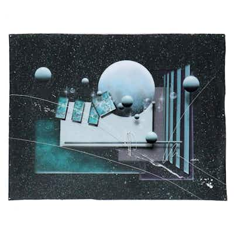

PASSJosef Kugler Surreal Cosmic Landscape Mixed Media Painting, 1980
Josef Kugler, "Surreal Cosmic Landscape" — mixed media painting (airbrush/spray and collag
20h left
Current bid$1 · 1 bids
Est. value$58
Your max bid$0
Margin at bid$22
Details & price history →